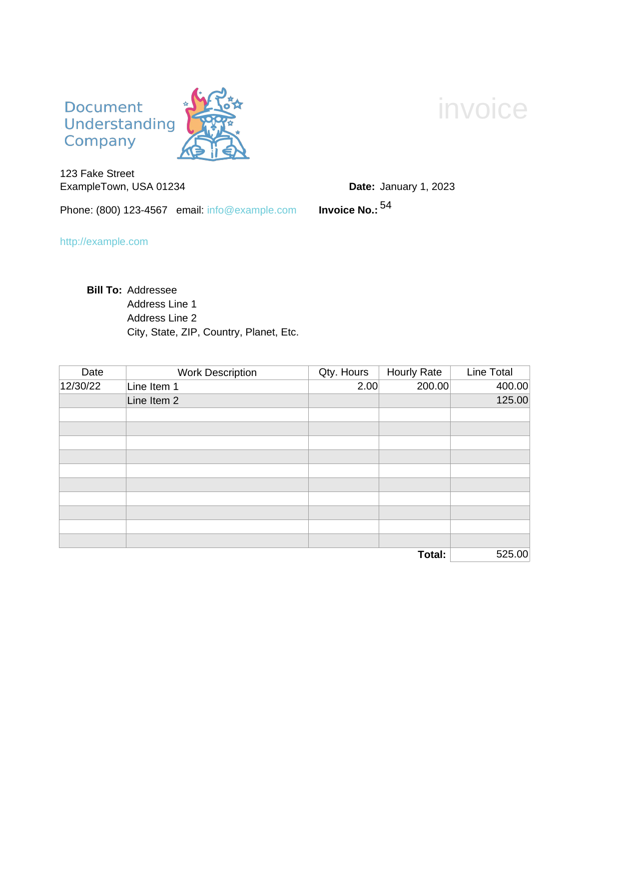
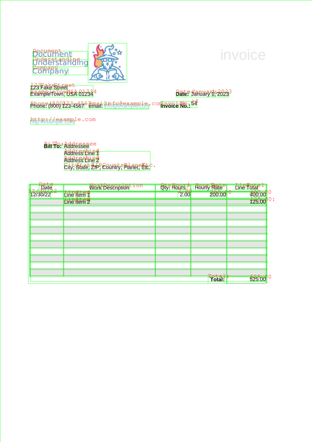
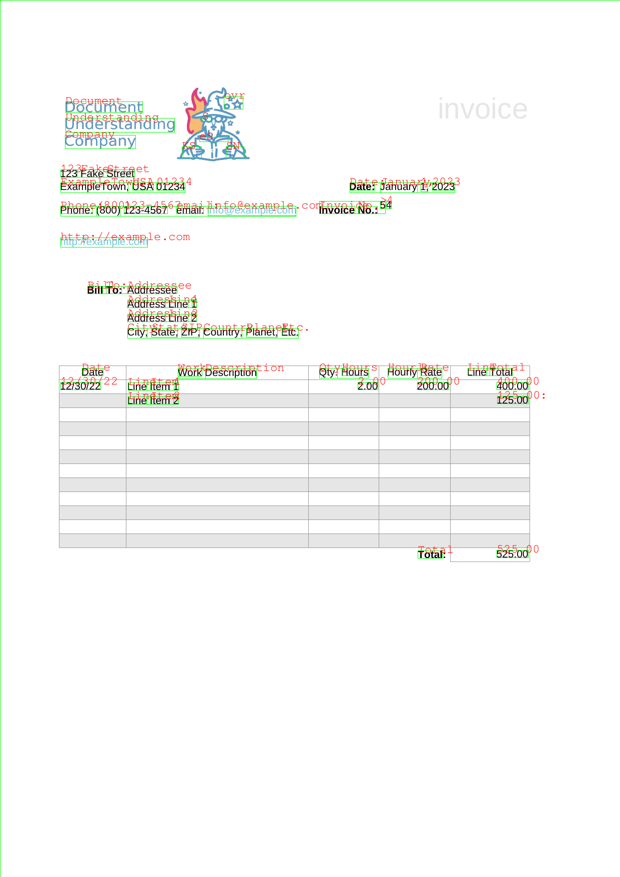
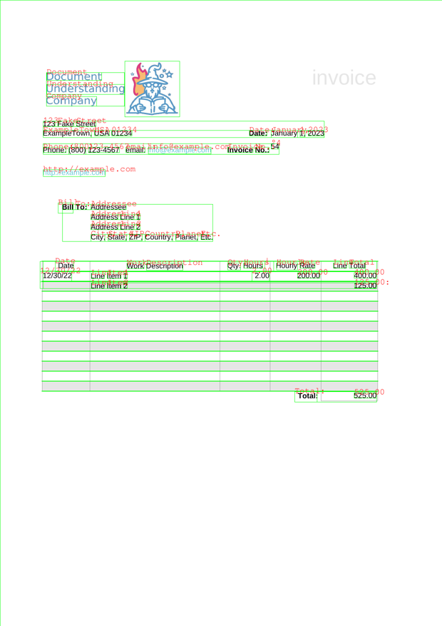
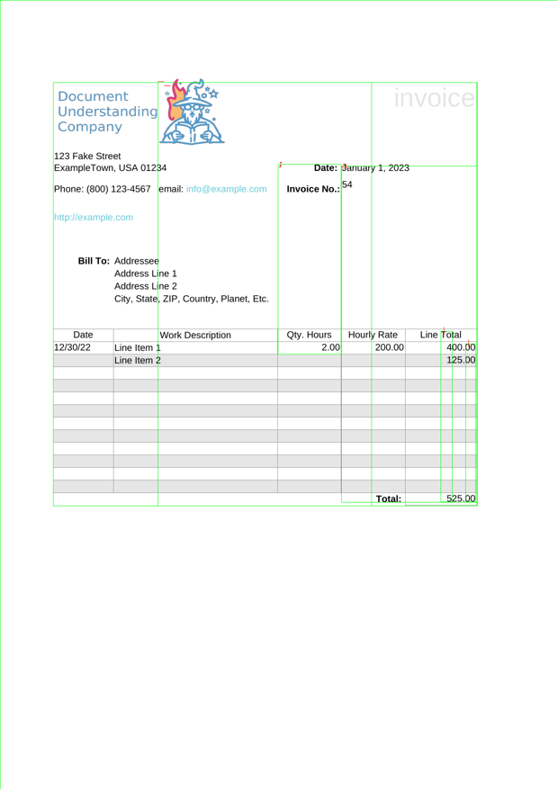
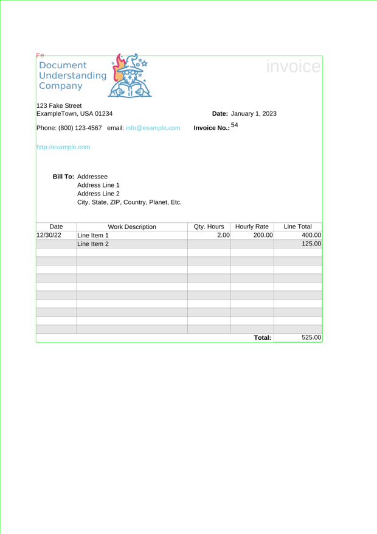

<!DOCTYPE html>


<html lang="en" >

  <head>
    <meta charset="utf-8" />
    <meta name="viewport" content="width=device-width, initial-scale=1.0" /><meta name="generator" content="Docutils 0.17.1: http://docutils.sourceforge.net/" />

    <title>Pytesseract Page Segmentation Modes (PSMs) Example &#8212; Document Understanding eBook</title>
  
  
  
  <script data-cfasync="false">
    document.documentElement.dataset.mode = localStorage.getItem("mode") || "";
    document.documentElement.dataset.theme = localStorage.getItem("theme") || "light";
  </script>
  
  <!-- Loaded before other Sphinx assets -->
  <link href="../../../../../_static/styles/theme.css?digest=e353d410970836974a52" rel="stylesheet" />
<link href="../../../../../_static/styles/bootstrap.css?digest=e353d410970836974a52" rel="stylesheet" />
<link href="../../../../../_static/styles/pydata-sphinx-theme.css?digest=e353d410970836974a52" rel="stylesheet" />

  
  <link href="../../../../../_static/vendor/fontawesome/6.1.2/css/all.min.css?digest=e353d410970836974a52" rel="stylesheet" />
  <link rel="preload" as="font" type="font/woff2" crossorigin href="../../../../../_static/vendor/fontawesome/6.1.2/webfonts/fa-solid-900.woff2" />
<link rel="preload" as="font" type="font/woff2" crossorigin href="../../../../../_static/vendor/fontawesome/6.1.2/webfonts/fa-brands-400.woff2" />
<link rel="preload" as="font" type="font/woff2" crossorigin href="../../../../../_static/vendor/fontawesome/6.1.2/webfonts/fa-regular-400.woff2" />

    <link rel="stylesheet" type="text/css" href="../../../../../_static/pygments.css" />
    <link rel="stylesheet" href="../../../../../_static/styles/sphinx-book-theme.css?digest=14f4ca6b54d191a8c7657f6c759bf11a5fb86285" type="text/css" />
    <link rel="stylesheet" type="text/css" href="../../../../../_static/togglebutton.css" />
    <link rel="stylesheet" type="text/css" href="../../../../../_static/copybutton.css" />
    <link rel="stylesheet" type="text/css" href="../../../../../_static/mystnb.4510f1fc1dee50b3e5859aac5469c37c29e427902b24a333a5f9fcb2f0b3ac41.css" />
    <link rel="stylesheet" type="text/css" href="../../../../../_static/sphinx-thebe.css" />
    <link rel="stylesheet" type="text/css" href="../../../../../_static/design-style.4045f2051d55cab465a707391d5b2007.min.css" />
  
  <!-- Pre-loaded scripts that we'll load fully later -->
  <link rel="preload" as="script" href="../../../../../_static/scripts/bootstrap.js?digest=e353d410970836974a52" />
<link rel="preload" as="script" href="../../../../../_static/scripts/pydata-sphinx-theme.js?digest=e353d410970836974a52" />

    <script data-url_root="../../../../../" id="documentation_options" src="../../../../../_static/documentation_options.js"></script>
    <script src="../../../../../_static/jquery.js"></script>
    <script src="../../../../../_static/underscore.js"></script>
    <script src="../../../../../_static/_sphinx_javascript_frameworks_compat.js"></script>
    <script src="../../../../../_static/doctools.js"></script>
    <script src="../../../../../_static/clipboard.min.js"></script>
    <script src="../../../../../_static/copybutton.js"></script>
    <script src="../../../../../_static/scripts/sphinx-book-theme.js?digest=5a5c038af52cf7bc1a1ec88eea08e6366ee68824"></script>
    <script>let toggleHintShow = 'Click to show';</script>
    <script>let toggleHintHide = 'Click to hide';</script>
    <script>let toggleOpenOnPrint = 'true';</script>
    <script src="../../../../../_static/togglebutton.js"></script>
    <script src="../../../../../_static/mybinder_postfix.js"></script>
    <script>var togglebuttonSelector = '.toggle, .admonition.dropdown';</script>
    <script src="../../../../../_static/design-tabs.js"></script>
    <script>const THEBE_JS_URL = "https://unpkg.com/thebe@0.8.2/lib/index.js"
const thebe_selector = ".thebe,.cell"
const thebe_selector_input = "pre"
const thebe_selector_output = ".output, .cell_output"
</script>
    <script async="async" src="../../../../../_static/sphinx-thebe.js"></script>
    <script>DOCUMENTATION_OPTIONS.pagename = 'binder/document-understanding-ebook/ocr/tesseract/pytesseract/pytesseract_psm_example';</script>
    <link rel="canonical" href="https://horvay.dev/document-understanding-ebook/binder/document-understanding-ebook/ocr/tesseract/pytesseract/pytesseract_psm_example.html" />
    <link rel="shortcut icon" href="../../../../../_static/favicon.ico"/>
    <link rel="index" title="Index" href="../../../../../genindex.html" />
    <link rel="search" title="Search" href="../../../../../search.html" />
    <link rel="next" title="🗄️ Datasets" href="../../../../../ocr/datasets/index.html" />
    <link rel="prev" title="Pytesseract Orientation and Script Detection (OSD) Example" href="pytesseract_osd_example.html" />
  <meta name="viewport" content="width=device-width, initial-scale=1"/>
  <meta name="docsearch:language" content="en"/>
  </head>
  
  
  <body data-bs-spy="scroll" data-bs-target=".bd-toc-nav" data-offset="180" data-bs-root-margin="0px 0px -60%" data-default-mode="">

  
  
  <a class="skip-link" href="#main-content">Skip to main content</a>
  
  <input type="checkbox"
          class="sidebar-toggle"
          name="__primary"
          id="__primary"/>
  <label class="overlay overlay-primary" for="__primary"></label>
  
  <input type="checkbox"
          class="sidebar-toggle"
          name="__secondary"
          id="__secondary"/>
  <label class="overlay overlay-secondary" for="__secondary"></label>
  
  <div class="search-button__wrapper">
    <div class="search-button__overlay"></div>
    <div class="search-button__search-container">
<form class="bd-search d-flex align-items-center"
      action="../../../../../search.html"
      method="get">
  <i class="fa-solid fa-magnifying-glass"></i>
  <input type="search"
         class="form-control"
         name="q"
         id="search-input"
         placeholder="Search this book..."
         aria-label="Search this book..."
         autocomplete="off"
         autocorrect="off"
         autocapitalize="off"
         spellcheck="false"/>
  <span class="search-button__kbd-shortcut"><kbd class="kbd-shortcut__modifier">Ctrl</kbd>+<kbd>K</kbd></span>
</form></div>
  </div>


  <div class="bd-header-announcement container-fluid bd-header-announcement">
    <div class="bd-header-announcement__content">Please note: this book is in alpha - it is consistently being updated with content for a v1.0.0 release! 🤗</div>
  </div>

  
    <nav class="bd-header navbar navbar-expand-lg bd-navbar">
    </nav>
  
  <div class="bd-container">
    <div class="bd-container__inner bd-page-width">
      
      <div class="bd-sidebar-primary bd-sidebar">
        

  
  <div class="sidebar-header-items sidebar-primary__section">
    
    
    
    
  </div>
  
    <div class="sidebar-primary-items__start sidebar-primary__section">
        <div class="sidebar-primary-item">
  

<a class="navbar-brand logo" href="../../../../../intro.html">
  
  
  
  
    
    
      
    
    
    
    <script>document.write(``);</script>
  
  
</a></div>
        <div class="sidebar-primary-item"><nav class="bd-links" id="bd-docs-nav" aria-label="Main">
    <div class="bd-toc-item navbar-nav active">
        
        <ul class="nav bd-sidenav bd-sidenav__home-link">
            <li class="toctree-l1">
                <a class="reference internal" href="../../../../../intro.html">
                    Introduction
                </a>
            </li>
        </ul>
        <p aria-level="2" class="caption" role="heading"><span class="caption-text">Prerequisites</span></p>
<ul class="nav bd-sidenav">
<li class="toctree-l1 has-children"><a class="reference internal" href="../../../../../understandingdocuments/index.html">Understanding Documents</a><input class="toctree-checkbox" id="toctree-checkbox-1" name="toctree-checkbox-1" type="checkbox"/><label class="toctree-toggle" for="toctree-checkbox-1"><i class="fa-solid fa-chevron-down"></i></label><ul>
<li class="toctree-l2"><a class="reference internal" href="../../../../../documentfileformats/index.html">📂 Document File Formats</a></li>
<li class="toctree-l2"><a class="reference internal" href="../../../../../documentstructures/index.html">🧱 Document Structures</a></li>
</ul>
</li>
</ul>
<p aria-level="2" class="caption" role="heading"><span class="caption-text">Topic Guides</span></p>
<ul class="current nav bd-sidenav">
<li class="toctree-l1 current active has-children"><a class="reference internal" href="../../../../../textextraction/index.html">Text Extraction</a><input checked="" class="toctree-checkbox" id="toctree-checkbox-2" name="toctree-checkbox-2" type="checkbox"/><label class="toctree-toggle" for="toctree-checkbox-2"><i class="fa-solid fa-chevron-down"></i></label><ul class="current">
<li class="toctree-l2 current active has-children"><a class="reference internal" href="../../../../../ocr/index.html">Optical Character Recognition</a><input checked="" class="toctree-checkbox" id="toctree-checkbox-3" name="toctree-checkbox-3" type="checkbox"/><label class="toctree-toggle" for="toctree-checkbox-3"><i class="fa-solid fa-chevron-down"></i></label><ul class="current">
<li class="toctree-l3"><a class="reference internal" href="../../../../../ocr/overview/history.html">📜 History</a></li>
<li class="toctree-l3"><a class="reference internal" href="../../../../../ocr/overview/howitworks.html">🧠 How it Works</a></li>
<li class="toctree-l3 has-children"><a class="reference internal" href="../../../../../ocr/software/index.html">💾 Software</a><input class="toctree-checkbox" id="toctree-checkbox-4" name="toctree-checkbox-4" type="checkbox"/><label class="toctree-toggle" for="toctree-checkbox-4"><i class="fa-solid fa-chevron-down"></i></label><ul>
<li class="toctree-l4"><a class="reference internal" href="../../../../../ocr/software/engines.html">⚙️ Engines</a></li>
<li class="toctree-l4"><a class="reference internal" href="../../../../../ocr/software/packages.html">📦 Packages</a></li>
<li class="toctree-l4"><a class="reference internal" href="../../../../../ocr/software/gui.html">💻 Graphical User Interfaces</a></li>
</ul>
</li>
<li class="toctree-l3 current active has-children"><a class="reference internal" href="../../../../../ocr/notebooks/index.html">📔 Notebooks</a><input checked="" class="toctree-checkbox" id="toctree-checkbox-5" name="toctree-checkbox-5" type="checkbox"/><label class="toctree-toggle" for="toctree-checkbox-5"><i class="fa-solid fa-chevron-down"></i></label><ul class="current">
<li class="toctree-l4"><a class="reference internal" href="pytesseract_basic_example.html">Pytesseract Basic Example</a></li>
<li class="toctree-l4"><a class="reference internal" href="pytesseract_languages_example.html">Pytesseract Languages Example</a></li>
<li class="toctree-l4"><a class="reference internal" href="pytesseract_batch_processing_example.html">Pytesseract Batch Processing Example</a></li>
<li class="toctree-l4"><a class="reference internal" href="pytesseract_output_formats_example.html">Pytesseract Output Formats Example</a></li>
<li class="toctree-l4"><a class="reference internal" href="pytesseract_function_parameters.html">Pytesseract Function Parameters</a></li>
<li class="toctree-l4"><a class="reference internal" href="pytesseract_osd_example.html">Pytesseract Orientation and Script Detection (OSD) Example</a></li>
<li class="toctree-l4 current active"><a class="current reference internal" href="#">Pytesseract Page Segmentation Modes (PSMs) Example</a></li>
</ul>
</li>
<li class="toctree-l3"><a class="reference internal" href="../../../../../ocr/datasets/index.html">🗄️ Datasets</a></li>
<li class="toctree-l3"><a class="reference internal" href="../../../../../ocr/papers/index.html">📑 Papers</a></li>
<li class="toctree-l3"><a class="reference internal" href="../../../../../ocr/benchmarks/index.html">📊 Benchmarks</a></li>
<li class="toctree-l3"><a class="reference internal" href="../../../../../ocr/resources/index.html">🗃️ Resources</a></li>
</ul>
</li>
</ul>
</li>
<li class="toctree-l1"><a class="reference internal" href="../../../../../bibliography/index.html">Bibliography</a></li>
</ul>

    </div>
</nav></div>
    </div>
  
  
  <div class="sidebar-primary-items__end sidebar-primary__section">
  </div>
  
  <div id="rtd-footer-container"></div>


      </div>
      
      <main id="main-content" class="bd-main">
        
        

<div class="sbt-scroll-pixel-helper"></div>

          <div class="bd-content">
            <div class="bd-article-container">
              
              <div class="bd-header-article">
<div class="header-article-items header-article__inner">
  
    <div class="header-article-items__start">
      
        <div class="header-article-item"><label class="sidebar-toggle primary-toggle btn btn-sm" for="__primary" title="Toggle primary sidebar" data-bs-placement="bottom" data-bs-toggle="tooltip">
  <span class="fa-solid fa-bars"></span>
</label></div>
      
    </div>
  
  
    <div class="header-article-items__end">
      
        <div class="header-article-item">

<div class="article-header-buttons">


<div class="dropdown dropdown-launch-buttons">
  <button class="btn dropdown-toggle" type="button" data-bs-toggle="dropdown" aria-expanded="false" aria-label="Launch interactive content">
    <i class="fas fa-rocket"></i>
  </button>
  <ul class="dropdown-menu">
      
      
      
      <li><a href="https://mybinder.org/v2/gh/dhorvay/document-understanding-ebook/master?urlpath=tree/binder/document-understanding-ebook/ocr/tesseract/pytesseract/pytesseract_psm_example.ipynb" target="_blank"
   class="btn btn-sm dropdown-item"
   title="Launch onBinder"
   data-bs-placement="left" data-bs-toggle="tooltip"
>
  

<span class="btn__icon-container">
  
    
  </span>
<span class="btn__text-container">Binder</span>
</a>
</li>
      
      
      
      
      <li><a href="https://colab.research.google.com/github/dhorvay/document-understanding-ebook/blob/master/binder/document-understanding-ebook/ocr/tesseract/pytesseract/pytesseract_psm_example.ipynb" target="_blank"
   class="btn btn-sm dropdown-item"
   title="Launch onColab"
   data-bs-placement="left" data-bs-toggle="tooltip"
>
  

<span class="btn__icon-container">
  
    
  </span>
<span class="btn__text-container">Colab</span>
</a>
</li>
      
  </ul>
</div>


<div class="dropdown dropdown-source-buttons">
  <button class="btn dropdown-toggle" type="button" data-bs-toggle="dropdown" aria-expanded="false" aria-label="Source repositories">
    <i class="fab fa-github"></i>
  </button>
  <ul class="dropdown-menu">
      
      
      
      <li><a href="https://github.com/dhorvay/document-understanding-ebook" target="_blank"
   class="btn btn-sm btn-source-repository-button dropdown-item"
   title="Source repository"
   data-bs-placement="left" data-bs-toggle="tooltip"
>
  

<span class="btn__icon-container">
  <i class="fab fa-github"></i>
  </span>
<span class="btn__text-container">Repository</span>
</a>
</li>
      
      
      
      
      <li><a href="https://github.com/dhorvay/document-understanding-ebook/issues/new?title=Issue%20on%20page%20%2Fbinder/document-understanding-ebook/ocr/tesseract/pytesseract/pytesseract_psm_example.html&body=Your%20issue%20content%20here." target="_blank"
   class="btn btn-sm btn-source-issues-button dropdown-item"
   title="Open an issue"
   data-bs-placement="left" data-bs-toggle="tooltip"
>
  

<span class="btn__icon-container">
  <i class="fas fa-lightbulb"></i>
  </span>
<span class="btn__text-container">Open issue</span>
</a>
</li>
      
  </ul>
</div>


<div class="dropdown dropdown-download-buttons">
  <button class="btn dropdown-toggle" type="button" data-bs-toggle="dropdown" aria-expanded="false" aria-label="Download this page">
    <i class="fas fa-download"></i>
  </button>
  <ul class="dropdown-menu">
      
      
      
      <li><a href="../../../../../_sources/binder/document-understanding-ebook/ocr/tesseract/pytesseract/pytesseract_psm_example.ipynb" target="_blank"
   class="btn btn-sm btn-download-source-button dropdown-item"
   title="Download source file"
   data-bs-placement="left" data-bs-toggle="tooltip"
>
  

<span class="btn__icon-container">
  <i class="fas fa-file"></i>
  </span>
<span class="btn__text-container">.ipynb</span>
</a>
</li>
      
      
      
      
      <li>
<button onclick="window.print()"
  class="btn btn-sm btn-download-pdf-button dropdown-item"
  title="Print to PDF"
  data-bs-placement="left" data-bs-toggle="tooltip"
>
  

<span class="btn__icon-container">
  <i class="fas fa-file-pdf"></i>
  </span>
<span class="btn__text-container">.pdf</span>
</button>
</li>
      
  </ul>
</div>


<button onclick="toggleFullScreen()"
  class="btn btn-sm btn-fullscreen-button"
  title="Fullscreen mode"
  data-bs-placement="bottom" data-bs-toggle="tooltip"
>
  

<span class="btn__icon-container">
  <i class="fas fa-expand"></i>
  </span>

</button>


<script>
document.write(`
  <button class="theme-switch-button btn btn-sm btn-outline-primary navbar-btn rounded-circle" title="light/dark" aria-label="light/dark" data-bs-placement="bottom" data-bs-toggle="tooltip">
    <span class="theme-switch" data-mode="light"><i class="fa-solid fa-sun"></i></span>
    <span class="theme-switch" data-mode="dark"><i class="fa-solid fa-moon"></i></span>
    <span class="theme-switch" data-mode="auto"><i class="fa-solid fa-circle-half-stroke"></i></span>
  </button>
`);
</script>

<script>
document.write(`
  <button class="btn btn-sm navbar-btn search-button search-button__button" title="Search" aria-label="Search" data-bs-placement="bottom" data-bs-toggle="tooltip">
    <i class="fa-solid fa-magnifying-glass"></i>
  </button>
`);
</script>
<label class="sidebar-toggle secondary-toggle btn btn-sm" for="__secondary"title="Toggle secondary sidebar" data-bs-placement="bottom" data-bs-toggle="tooltip">
    <span class="fa-solid fa-list"></span>
</label>
</div></div>
      
    </div>
  
</div>
</div>
              
              

<div id="jb-print-docs-body" class="onlyprint">
    <h1>Pytesseract Page Segmentation Modes (PSMs) Example</h1>
    <!-- Table of contents -->
    <div id="print-main-content">
        <div id="jb-print-toc">
            
            <div>
                <h2> Contents </h2>
            </div>
            <nav aria-label="Page">
                <ul class="visible nav section-nav flex-column">
<li class="toc-h2 nav-item toc-entry"><a class="reference internal nav-link" href="#experimenting-with-psms">Experimenting with PSMs</a></li>
<li class="toc-h2 nav-item toc-entry"><a class="reference internal nav-link" href="#good-segmentation-models-for-this-document">Good segmentation models for this document</a></li>
<li class="toc-h2 nav-item toc-entry"><a class="reference internal nav-link" href="#psm-3-fully-automatic-page-segmentation-but-no-osd-default">PSM 3 - Fully automatic page segmentation, but no OSD. (Default)</a></li>
<li class="toc-h2 nav-item toc-entry"><a class="reference internal nav-link" href="#psm-12-sparse-text-with-osd">PSM 12 - Sparse text with OSD</a></li>
<li class="toc-h2 nav-item toc-entry"><a class="reference internal nav-link" href="#psm-4-assume-a-single-column-of-text-of-variable-sizes">PSM 4 - Assume a single column of text of variable sizes.</a></li>
<li class="toc-h2 nav-item toc-entry"><a class="reference internal nav-link" href="#bad-segmentations-models-for-this-document">Bad segmentations models for this document</a></li>
<li class="toc-h2 nav-item toc-entry"><a class="reference internal nav-link" href="#psm-7-treat-the-image-as-a-single-text-line">PSM 7 - Treat the image as a single text line</a></li>
<li class="toc-h2 nav-item toc-entry"><a class="reference internal nav-link" href="#psm-8-treat-the-image-as-a-single-word">PSM 8 - Treat the image as a single word</a></li>
</ul>
            </nav>
        </div>
    </div>
</div>

              
                
<div id="searchbox"></div>
                <article class="bd-article" role="main">
                  
  <section class="tex2jax_ignore mathjax_ignore" id="pytesseract-page-segmentation-modes-psms-example">
<h1>Pytesseract Page Segmentation Modes (PSMs) Example<a class="headerlink" href="#pytesseract-page-segmentation-modes-psms-example" title="Permalink to this heading">#</a></h1>
<p>This example covers page segmentation modes or PSMs in Tesseract/pytesseract.</p>
<p>Page segmentation mode in Tesseract refers to the process of dividing an image containing text into individual text segments or regions. By specifying the desired page segmentation mode, you can instruct Tesseract on how to analyze the image and extract the text accurately. Experimentation with different modes may be necessary to achieve the best results for your specific use case.</p>
<div class="highlight-sh notranslate"><div class="highlight"><pre><span></span>tesseract<span class="w"> </span>--help-psm
<span class="w">  </span><span class="m">0</span><span class="w">    </span>Orientation<span class="w"> </span>and<span class="w"> </span>script<span class="w"> </span>detection<span class="w"> </span><span class="o">(</span>OSD<span class="o">)</span><span class="w"> </span>only.
<span class="w">  </span><span class="m">1</span><span class="w">    </span>Automatic<span class="w"> </span>page<span class="w"> </span>segmentation<span class="w"> </span>with<span class="w"> </span>OSD.
<span class="w">  </span><span class="m">2</span><span class="w">    </span>Automatic<span class="w"> </span>page<span class="w"> </span>segmentation,<span class="w"> </span>but<span class="w"> </span>no<span class="w"> </span>OSD,<span class="w"> </span>or<span class="w"> </span>OCR.<span class="w"> </span><span class="o">(</span>not<span class="w"> </span>implemented<span class="o">)</span>
<span class="w">  </span><span class="m">3</span><span class="w">    </span>Fully<span class="w"> </span>automatic<span class="w"> </span>page<span class="w"> </span>segmentation,<span class="w"> </span>but<span class="w"> </span>no<span class="w"> </span>OSD.<span class="w"> </span><span class="o">(</span>Default<span class="o">)</span>
<span class="w">  </span><span class="m">4</span><span class="w">    </span>Assume<span class="w"> </span>a<span class="w"> </span>single<span class="w"> </span>column<span class="w"> </span>of<span class="w"> </span>text<span class="w"> </span>of<span class="w"> </span>variable<span class="w"> </span>sizes.
<span class="w">  </span><span class="m">5</span><span class="w">    </span>Assume<span class="w"> </span>a<span class="w"> </span>single<span class="w"> </span>uniform<span class="w"> </span>block<span class="w"> </span>of<span class="w"> </span>vertically<span class="w"> </span>aligned<span class="w"> </span>text.
<span class="w">  </span><span class="m">6</span><span class="w">    </span>Assume<span class="w"> </span>a<span class="w"> </span>single<span class="w"> </span>uniform<span class="w"> </span>block<span class="w"> </span>of<span class="w"> </span>text.
<span class="w">  </span><span class="m">7</span><span class="w">    </span>Treat<span class="w"> </span>the<span class="w"> </span>image<span class="w"> </span>as<span class="w"> </span>a<span class="w"> </span>single<span class="w"> </span>text<span class="w"> </span>line.
<span class="w">  </span><span class="m">8</span><span class="w">    </span>Treat<span class="w"> </span>the<span class="w"> </span>image<span class="w"> </span>as<span class="w"> </span>a<span class="w"> </span>single<span class="w"> </span>word.
<span class="w">  </span><span class="m">9</span><span class="w">    </span>Treat<span class="w"> </span>the<span class="w"> </span>image<span class="w"> </span>as<span class="w"> </span>a<span class="w"> </span>single<span class="w"> </span>word<span class="w"> </span><span class="k">in</span><span class="w"> </span>a<span class="w"> </span>circle.
<span class="w"> </span><span class="m">10</span><span class="w">    </span>Treat<span class="w"> </span>the<span class="w"> </span>image<span class="w"> </span>as<span class="w"> </span>a<span class="w"> </span>single<span class="w"> </span>character.
<span class="w"> </span><span class="m">11</span><span class="w">    </span>Sparse<span class="w"> </span>text.<span class="w"> </span>Find<span class="w"> </span>as<span class="w"> </span>much<span class="w"> </span>text<span class="w"> </span>as<span class="w"> </span>possible<span class="w"> </span><span class="k">in</span><span class="w"> </span>no<span class="w"> </span>particular<span class="w"> </span>order.
<span class="w"> </span><span class="m">12</span><span class="w">    </span>Sparse<span class="w"> </span>text<span class="w"> </span>with<span class="w"> </span>OSD.
<span class="w"> </span><span class="m">13</span><span class="w">    </span>Raw<span class="w"> </span>line.<span class="w"> </span>Treat<span class="w"> </span>the<span class="w"> </span>image<span class="w"> </span>as<span class="w"> </span>a<span class="w"> </span>single<span class="w"> </span>text<span class="w"> </span>line,
<span class="w">       </span>bypassing<span class="w"> </span>hacks<span class="w"> </span>that<span class="w"> </span>are<span class="w"> </span>Tesseract-specific.
</pre></div>
</div>
<div class="cell docutils container">
<div class="cell_input docutils container">
<div class="highlight-ipython3 notranslate"><div class="highlight"><pre><span></span><span class="kn">from</span> <span class="nn">IPython.display</span> <span class="kn">import</span> <span class="n">HTML</span>
<span class="kn">from</span> <span class="nn">PIL</span> <span class="kn">import</span> <span class="n">Image</span><span class="p">,</span> <span class="n">ImageDraw</span><span class="p">,</span> <span class="n">ImageFont</span>
<span class="kn">import</span> <span class="nn">pytesseract</span>

<span class="k">def</span> <span class="nf">draw_data</span><span class="p">(</span><span class="n">im</span><span class="p">,</span> <span class="n">psm</span><span class="o">=</span><span class="s1">&#39;--psm 3&#39;</span><span class="p">):</span>
    <span class="nb">print</span><span class="p">(</span><span class="s2">&quot;Text Output: </span><span class="se">\n\n</span><span class="s2">------------</span><span class="se">\n</span><span class="s2">&quot;</span><span class="p">,</span> <span class="n">pytesseract</span><span class="o">.</span><span class="n">image_to_string</span><span class="p">(</span><span class="n">im</span><span class="p">,</span> <span class="n">config</span><span class="o">=</span><span class="n">psm</span><span class="p">))</span>
    <span class="n">draw</span> <span class="o">=</span> <span class="n">ImageDraw</span><span class="o">.</span><span class="n">Draw</span><span class="p">(</span><span class="n">im</span><span class="p">)</span>
    <span class="n">data</span> <span class="o">=</span> <span class="n">pytesseract</span><span class="o">.</span><span class="n">image_to_data</span><span class="p">(</span><span class="n">im</span><span class="p">,</span> <span class="n">config</span><span class="o">=</span><span class="n">psm</span><span class="p">)</span><span class="o">.</span><span class="n">split</span><span class="p">(</span><span class="s1">&#39;</span><span class="se">\n</span><span class="s1">&#39;</span><span class="p">)</span>
    <span class="n">font</span> <span class="o">=</span> <span class="n">ImageFont</span><span class="o">.</span><span class="n">truetype</span><span class="p">(</span><span class="s2">&quot;/usr/share/fonts/truetype/freefont/FreeMono.ttf&quot;</span><span class="p">,</span> <span class="mi">24</span><span class="p">)</span>
    <span class="k">for</span> <span class="n">d</span> <span class="ow">in</span> <span class="n">data</span><span class="p">[</span><span class="mi">1</span><span class="p">:]:</span>
        <span class="n">cols</span> <span class="o">=</span> <span class="n">d</span><span class="o">.</span><span class="n">split</span><span class="p">(</span><span class="s1">&#39;</span><span class="se">\t</span><span class="s1">&#39;</span><span class="p">)</span>
        <span class="k">if</span> <span class="nb">len</span><span class="p">(</span><span class="n">cols</span><span class="p">)</span> <span class="o">&gt;</span> <span class="mi">1</span><span class="p">:</span>
            <span class="n">left</span><span class="p">,</span> <span class="n">top</span><span class="p">,</span> <span class="n">width</span><span class="p">,</span> <span class="n">height</span> <span class="o">=</span> <span class="nb">int</span><span class="p">(</span><span class="n">cols</span><span class="p">[</span><span class="mi">6</span><span class="p">]),</span> <span class="nb">int</span><span class="p">(</span><span class="n">cols</span><span class="p">[</span><span class="mi">7</span><span class="p">]),</span> <span class="nb">int</span><span class="p">(</span><span class="n">cols</span><span class="p">[</span><span class="mi">8</span><span class="p">]),</span><span class="nb">int</span><span class="p">(</span><span class="n">cols</span><span class="p">[</span><span class="mi">9</span><span class="p">])</span>
            <span class="n">text</span> <span class="o">=</span> <span class="n">cols</span><span class="p">[</span><span class="mi">11</span><span class="p">]</span>
            <span class="n">draw</span><span class="o">.</span><span class="n">rectangle</span><span class="p">(((</span><span class="n">left</span><span class="p">,</span> <span class="n">top</span><span class="p">),</span> <span class="p">(</span><span class="n">left</span><span class="o">+</span><span class="n">width</span><span class="p">,</span> <span class="n">top</span><span class="o">+</span><span class="n">height</span><span class="p">)),</span> <span class="n">outline</span><span class="o">=</span><span class="p">(</span><span class="mi">0</span><span class="p">,</span> <span class="mi">255</span><span class="p">,</span> <span class="mi">0</span><span class="p">))</span>
            <span class="n">draw</span><span class="o">.</span><span class="n">text</span><span class="p">((</span><span class="n">left</span><span class="p">,</span> <span class="n">top</span><span class="o">-</span><span class="mi">15</span><span class="p">),</span> <span class="n">text</span><span class="p">,</span> <span class="n">font</span><span class="o">=</span><span class="n">font</span><span class="p">,</span> <span class="n">fill</span><span class="o">=</span><span class="p">(</span><span class="mi">255</span><span class="p">,</span> <span class="mi">0</span><span class="p">,</span> <span class="mi">0</span><span class="p">))</span> 
    <span class="n">display</span><span class="p">(</span><span class="n">im</span><span class="o">.</span><span class="n">resize</span><span class="p">(</span><span class="nb">int</span><span class="p">(</span><span class="mf">0.5</span><span class="o">*</span><span class="n">s</span><span class="p">)</span> <span class="k">for</span> <span class="n">s</span> <span class="ow">in</span> <span class="n">im</span><span class="o">.</span><span class="n">size</span><span class="p">))</span>
</pre></div>
</div>
</div>
</div>
<section id="experimenting-with-psms">
<h2>Experimenting with PSMs<a class="headerlink" href="#experimenting-with-psms" title="Permalink to this heading">#</a></h2>
<p>Here we will be using a invoice-style document. We will look at a few examples that work well for this document, then a few that don’t.</p>
<div class="cell docutils container">
<div class="cell_input docutils container">
<div class="highlight-ipython3 notranslate"><div class="highlight"><pre><span></span><span class="n">path</span> <span class="o">=</span> <span class="s1">&#39;../../../../binder-datasets/ocr/images/invoice.png&#39;</span>
<span class="n">im</span> <span class="o">=</span> <span class="n">Image</span><span class="o">.</span><span class="n">open</span><span class="p">(</span><span class="n">path</span><span class="p">)</span>
<span class="n">w</span><span class="p">,</span><span class="n">h</span> <span class="o">=</span> <span class="n">im</span><span class="o">.</span><span class="n">size</span>
<span class="n">display</span><span class="p">(</span><span class="n">im</span><span class="o">.</span><span class="n">resize</span><span class="p">(</span><span class="nb">int</span><span class="p">(</span><span class="mf">0.5</span><span class="o">*</span><span class="n">s</span><span class="p">)</span> <span class="k">for</span> <span class="n">s</span> <span class="ow">in</span> <span class="n">im</span><span class="o">.</span><span class="n">size</span><span class="p">))</span>
</pre></div>
</div>
</div>
<div class="cell_output docutils container">

</div>
</div>
</section>
<section id="good-segmentation-models-for-this-document">
<h2>Good segmentation models for this document<a class="headerlink" href="#good-segmentation-models-for-this-document" title="Permalink to this heading">#</a></h2>
</section>
<section id="psm-3-fully-automatic-page-segmentation-but-no-osd-default">
<h2>PSM 3 - Fully automatic page segmentation, but no OSD. (Default)<a class="headerlink" href="#psm-3-fully-automatic-page-segmentation-but-no-osd-default" title="Permalink to this heading">#</a></h2>
<p>PSM 3 is the automatic page segmentation mode that analyzes the input image and attempts to intelligently detect and segment text regions based on the layout and structure of the document.</p>
<p>It performs automatic orientation detection to correctly orient the text and script detection to identify the writing system used in the document.</p>
<p>PSM 3 is suitable for general-purpose OCR tasks when dealing with typical documents with standard text flow, such as letters, articles, or book pages.</p>
<p>We can see in this case that all of the words are segmented, and surprisingly even the table and image has been segmented as well with both horizontal shaped boxes and vertical shaped boxes.</p>
<div class="cell docutils container">
<div class="cell_input docutils container">
<div class="highlight-ipython3 notranslate"><div class="highlight"><pre><span></span><span class="n">draw_data</span><span class="p">(</span><span class="n">im</span><span class="o">.</span><span class="n">copy</span><span class="p">(),</span> <span class="s1">&#39;--psm 3&#39;</span><span class="p">)</span>
</pre></div>
</div>
</div>
<div class="cell_output docutils container">
<div class="output stream highlight-myst-ansi notranslate"><div class="highlight"><pre><span></span>Text Output: 

------------
  

Document
Understanding
Company

 

123 Fake Street
ExampleTown, USA 01234

Phone: (800) 123-4567 email: info@example.com

http://example.com

Bill To: Addressee

Address Line 1
Address Line 2
City, State, ZIP, Country, Planet, Etc.

Date: January 1, 2023

Invoice No.: &gt;4

 

 

 

 

 

 

 

 

 

 

 

 

 

 

 

 

 

Date Work Description Qty. Hours | Hourly Rate Line Total
12/30/22 Line Item 1 2.00 200.00 400.00
Line Item 2 125.00:
Total: 525.00

 

 

</pre></div>
</div>

</div>
</div>
</section>
<section id="psm-12-sparse-text-with-osd">
<h2>PSM 12 - Sparse text with OSD<a class="headerlink" href="#psm-12-sparse-text-with-osd" title="Permalink to this heading">#</a></h2>
<p>PSM 12 is designed for documents with sparse text and irregular layouts, where the text is scattered across the document and not necessarily organized into structured paragraphs or columns.</p>
<p>It performs automatic orientation detection and is optimized for handling cases where the text is sparsely distributed, such as business cards, receipts, or images with isolated text elements.</p>
<p>PSM 12 is suitable for scenarios where the text regions are not densely packed or do not conform to a specific layout structure.</p>
<p>We can see in this case that words stricly are segmented, unlike in PSM 3 where we also saw that some of the table was being identified.</p>
<div class="cell docutils container">
<div class="cell_input docutils container">
<div class="highlight-ipython3 notranslate"><div class="highlight"><pre><span></span><span class="n">draw_data</span><span class="p">(</span><span class="n">im</span><span class="o">.</span><span class="n">copy</span><span class="p">(),</span> <span class="s1">&#39;--psm 12&#39;</span><span class="p">)</span>
</pre></div>
</div>
</div>
<div class="cell_output docutils container">
<div class="output stream highlight-myst-ansi notranslate"><div class="highlight"><pre><span></span>Document

ovr

S

Understanding

eS

Company

KS

SN

123 Fake Street

ExampleTown, USA 01234

Date: January 1, 2023

4

Phone: (800) 123-4567 email: info@example.com

Invoice No.: &gt;

http://example.com

Bill To: Addressee

Address Line 1

Address Line 2

City, State, ZIP, Country, Planet, Etc.

Date

Work Description

Qty. Hours

Hourly Rate

Line Total

12/30/22

Line Item 1

2.00

200.00

400.00

Line Item 2

125.00:

Total

525.00

</pre></div>
</div>

</div>
</div>
</section>
<section id="psm-4-assume-a-single-column-of-text-of-variable-sizes">
<h2>PSM 4 - Assume a single column of text of variable sizes.<a class="headerlink" href="#psm-4-assume-a-single-column-of-text-of-variable-sizes" title="Permalink to this heading">#</a></h2>
<p>PSM 4 assumes that the input document contains a single column of text and is suitable for situations where you have a document with a simple, continuous flow of text in a single column.</p>
<p>It ignores multi-column layouts and focuses on processing the text as a single continuous block.</p>
<p>PSM 4 is commonly used for processing documents like pages from novels, letters, or single-column newspaper articles.</p>
<p>We can see in the output we mostly get horizontal bounding boxes, which no vertical shaped bounding boxes like in PSM 3.</p>
<div class="cell docutils container">
<div class="cell_input docutils container">
<div class="highlight-ipython3 notranslate"><div class="highlight"><pre><span></span><span class="n">draw_data</span><span class="p">(</span><span class="n">im</span><span class="o">.</span><span class="n">copy</span><span class="p">(),</span> <span class="s1">&#39;--psm 4&#39;</span><span class="p">)</span>
</pre></div>
</div>
</div>
<div class="cell_output docutils container">
<div class="output stream highlight-myst-ansi notranslate"><div class="highlight"><pre><span></span>Document
Understanding
Company

 

123 Fake Street
ExampleTown, USA 01234 Date: January 1, 2023

Phone: (800) 123-4567 email: info@example.com Invoice No.: °4

http://example.com

Bill To: Addressee
Address Line 1
Address Line 2
City, State, ZIP, Country, Planet, Etc.

 

 

 

Date Work Description Qty. Hours | Hourly Rate Line Total
12/30/22 Line Item 1 2.00 200.00 400.00
Line Item 2 125.00:

 

 

 

 

 

 

 

 

 

 

 

Total: 525.00

</pre></div>
</div>

</div>
</div>
</section>
<section id="bad-segmentations-models-for-this-document">
<h2>Bad segmentations models for this document<a class="headerlink" href="#bad-segmentations-models-for-this-document" title="Permalink to this heading">#</a></h2>
</section>
<section id="psm-7-treat-the-image-as-a-single-text-line">
<h2>PSM 7 - Treat the image as a single text line<a class="headerlink" href="#psm-7-treat-the-image-as-a-single-text-line" title="Permalink to this heading">#</a></h2>
<p>PSM 7 assumes that the image contains a single line of text and focuses on recognizing the text within that line.</p>
<p>It ignores any multi-line structures, columns, or other layout elements in the document.</p>
<p>PSM 7 is best suited for cases where the text is presented as a single, horizontally aligned line.</p>
<p>We can see in the output the document is treated as several bounding boxes across the horizontal axis.</p>
<div class="cell docutils container">
<div class="cell_input docutils container">
<div class="highlight-ipython3 notranslate"><div class="highlight"><pre><span></span><span class="n">draw_data</span><span class="p">(</span><span class="n">im</span><span class="o">.</span><span class="n">copy</span><span class="p">(),</span> <span class="s1">&#39;--psm 7&#39;</span><span class="p">)</span>
</pre></div>
</div>
</div>
<div class="cell_output docutils container">
<div class="output stream highlight-myst-ansi notranslate"><div class="highlight"><pre><span></span>—_ ; a | |

</pre></div>
</div>

</div>
</div>
</section>
<section id="psm-8-treat-the-image-as-a-single-word">
<h2>PSM 8 - Treat the image as a single word<a class="headerlink" href="#psm-8-treat-the-image-as-a-single-word" title="Permalink to this heading">#</a></h2>
<p>PSM 8 assumes that the image represents a single word or a small cluster of words with no significant gaps or spacing between them. It focuses on recognizing the text within that word or word group.</p>
<p>This mode is particularly useful when you want to extract or recognize individual words from an image, such as extracting text from a word-based logo, signs, or labels.</p>
<p>We can see in the output that the entire document is treated as one bounding box.</p>
<div class="cell docutils container">
<div class="cell_input docutils container">
<div class="highlight-ipython3 notranslate"><div class="highlight"><pre><span></span><span class="n">draw_data</span><span class="p">(</span><span class="n">im</span><span class="o">.</span><span class="n">copy</span><span class="p">(),</span> <span class="s1">&#39;--psm 8&#39;</span><span class="p">)</span>
</pre></div>
</div>
</div>
<div class="cell_output docutils container">
<div class="output stream highlight-myst-ansi notranslate"><div class="highlight"><pre><span></span>Text Output: 
 Fe

</pre></div>
</div>

</div>
</div>
</section>
</section>

    <script type="text/x-thebe-config">
    {
        requestKernel: true,
        binderOptions: {
            repo: "binder-examples/jupyter-stacks-datascience",
            ref: "master",
        },
        codeMirrorConfig: {
            theme: "abcdef",
            mode: "python"
        },
        kernelOptions: {
            name: "python3",
            path: "./binder/document-understanding-ebook/ocr/tesseract/pytesseract"
        },
        predefinedOutput: true
    }
    </script>
    <script>kernelName = 'python3'</script>

                </article>
              

              
              
                <footer class="bd-footer-article">
                  
<div class="footer-article-items footer-article__inner">
  
    <div class="footer-article-item"><!-- Previous / next buttons -->
<div class="prev-next-area">
    <a class="left-prev"
       href="pytesseract_osd_example.html"
       title="previous page">
      <i class="fa-solid fa-angle-left"></i>
      <div class="prev-next-info">
        <p class="prev-next-subtitle">previous</p>
        <p class="prev-next-title">Pytesseract Orientation and Script Detection (OSD) Example</p>
      </div>
    </a>
    <a class="right-next"
       href="../../../../../ocr/datasets/index.html"
       title="next page">
      <div class="prev-next-info">
        <p class="prev-next-subtitle">next</p>
        <p class="prev-next-title">🗄️ Datasets</p>
      </div>
      <i class="fa-solid fa-angle-right"></i>
    </a>
</div></div>
  
</div>

                </footer>
              
            </div>
            
            
              
                <div class="bd-sidebar-secondary bd-toc"><div class="sidebar-secondary-items sidebar-secondary__inner">

  <div class="sidebar-secondary-item">
  <div class="page-toc tocsection onthispage">
    <i class="fa-solid fa-list"></i> Contents
  </div>
  <nav class="bd-toc-nav page-toc">
    <ul class="visible nav section-nav flex-column">
<li class="toc-h2 nav-item toc-entry"><a class="reference internal nav-link" href="#experimenting-with-psms">Experimenting with PSMs</a></li>
<li class="toc-h2 nav-item toc-entry"><a class="reference internal nav-link" href="#good-segmentation-models-for-this-document">Good segmentation models for this document</a></li>
<li class="toc-h2 nav-item toc-entry"><a class="reference internal nav-link" href="#psm-3-fully-automatic-page-segmentation-but-no-osd-default">PSM 3 - Fully automatic page segmentation, but no OSD. (Default)</a></li>
<li class="toc-h2 nav-item toc-entry"><a class="reference internal nav-link" href="#psm-12-sparse-text-with-osd">PSM 12 - Sparse text with OSD</a></li>
<li class="toc-h2 nav-item toc-entry"><a class="reference internal nav-link" href="#psm-4-assume-a-single-column-of-text-of-variable-sizes">PSM 4 - Assume a single column of text of variable sizes.</a></li>
<li class="toc-h2 nav-item toc-entry"><a class="reference internal nav-link" href="#bad-segmentations-models-for-this-document">Bad segmentations models for this document</a></li>
<li class="toc-h2 nav-item toc-entry"><a class="reference internal nav-link" href="#psm-7-treat-the-image-as-a-single-text-line">PSM 7 - Treat the image as a single text line</a></li>
<li class="toc-h2 nav-item toc-entry"><a class="reference internal nav-link" href="#psm-8-treat-the-image-as-a-single-word">PSM 8 - Treat the image as a single word</a></li>
</ul>
  </nav></div>

</div></div>
              
            
          </div>
          <footer class="bd-footer-content">
            
<div class="bd-footer-content__inner container">
  
  <div class="footer-item">
    
<p class="component-author">
By Devin Horvay
</p>

  </div>
  
  <div class="footer-item">
    
  <p class="copyright">
    
      © Copyright 2023.
      <br/>
    
  </p>

  </div>
  
  <div class="footer-item">
    
  </div>
  
  <div class="footer-item">
    
<div class="extra_footer">
  All of the material in this book is publicly available under <a href="https://github.com/dhorvay/document-understanding-ebook/blob/main/LICENSE">open source licenses.</a>

</div>
  </div>
  
</div>
          </footer>
        

      </main>
    </div>
  </div>
  
  <!-- Scripts loaded after <body> so the DOM is not blocked -->
  <script src="../../../../../_static/scripts/bootstrap.js?digest=e353d410970836974a52"></script>
<script src="../../../../../_static/scripts/pydata-sphinx-theme.js?digest=e353d410970836974a52"></script>

  <footer class="bd-footer">
  </footer>
  </body>
</html>